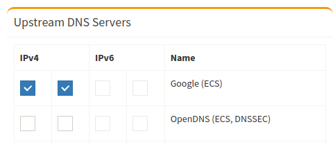
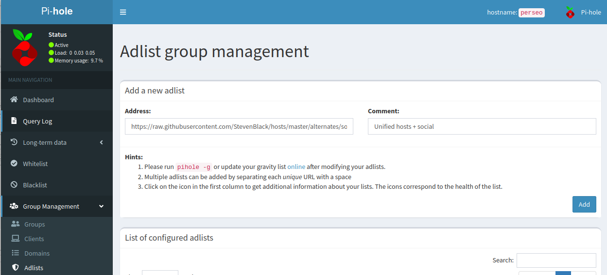

7. Proxy DNS - PiHole
1. Introducción
Un proxy es un equipo que actúa como intermediario en las peticiones de recursos entre un cliente y un servidor.
Un proxy DNS supervisa las consultas DNS de una red (normalmente de área local) y las reenvía a un servidor de nombres de dominio de Internet, pudiendo almacenar los registros en caché. Al monitorizar todas las peticiones, también se pueden aplicar reglas de filtrado sobre ellas y desechar las potencialmente peligrosas.
Un servidor DNS puede estar configurado para contestar las peticiones con información falsa. Estos servidores se conocen como sumideros de DNS (DNS sinkhole) y se pueden utilizar en dos sentidos:
- Un atacante puede redirigir el tráfico de un sistema a un destino potencialmente malicioso o a un destino que se quiera atacar por DoS.
- En el sentido contrario, se puede utilizar como defensa frente a ataques (contención de malware, prevención de acceso a honeynets y sitios controladores de botnets, mitigación de ataques DoS), como filtro de control a sitios y dominios que sin ser específicamente maliciosos contravienen las políticas corporativas, o como herramienta de bloqueo publicitario.
2. Configuración de un proxy DNS
La configuración en modo sumidero de un proxy DNS se puede considerar parte de la estrategia de seguridad de defensa en profundidad de una empresa.
Para que el proxy DNS sea efectivo todas las peticiones DNS realizadas dentro de la red interna (y de la DMZ) deben encaminarse a través de él. Si se permitieran las conexiones TCP y UDP a un servidor DNS externo desde cualquier equipo de la red interna (o de la DMZ), no se tendría protección, por ejemplo, contra troyanos habituales que utilizan el puerto 53 o explotaciones de DNS.
3. Proxy DNS Pi-Hole
|
Pi-hole es un sinkhole DNS que protege los dispositivos de contenido no deseado, sin instalar ningún software del lado del cliente.
Un ejemplo práctico del funcionamiento de Pi-Hole
- Acceder a una url desde el navegador, por ejemplo: www.upv.es.
- El dispositivo consulta a pihole la dirección ip de www.upv.es.
- El navegador se conecta a la dirección IP, comienza a cargar el sitio y se realizan nuevas consultas de otros dominios para cargar todos los contenidos de la pagina, imágenes, vídeos, publicidad, etcétera.
- Pi-Hole compara cada una de las solicitudes con una lista que contiene dominios conocidos por tener publicidad, de encontrarse en esa lista pihole responde con su propia dirección IP. Esto lo hace porque tiene una base de datos con todos los dominios «malos» (lista negra) y los va actualizando regularmente. También es posible agregar y quitar dominios de estas listas.
- El navegador no encuentra los anuncios y no son mostrados en la pagina. Por lo general se ven recuadros blancos.
4. Instalación de Pi-hole en Ubuntu Server 20.04
A partir de la infraestructura de red que se construyó en la Práctica 1 de la unidad de trabajo Fortificación perimetral: DMZ, hay que añadir un equipo en la misma que contendrá el proxy DNS Pi-Hole. Para este caso, los equipos de la red IT tendrán configurado como servidor DNS la ip del equipo Pi-Hole para que la resolución de nombras la realice el mismo. La red dmz no utiliza el proxy DNS ya que los servidores no están dedicados para la navegación por la web, simplemente ofrecen servicios a los usuarios de internet.
En el firewall PfSense, se creará un servidor dhcp en la red IT para establecer el direccionamiento dinámico a los equipos clientes a excepción del servidor controlador del dominio que tendrá ip estática.
4.1 Configuración en PfSense
1. DHCP Server - IT
Hay que habilitar el servidor dhcp en la red it con los siguientes datos a excepción del servidor controlador del dominio que tiene ip estática.
- Enable DHCP server on DMZ interface: Enable.
- Range: 192.168.100.100 to 192.168.100.150
- DNS servers: 192.168.0.251 (ip del pi-hole).
- DNS server 2: 192.168.0.254 (ip del controlador del dominio). Los equipos clientes del dominio tendrán como DNS alternativo la ip del controlador del dominio para la resolución de nombres del dominio.
2. Firewall > NAT > Port Forward para red IT
Hay que añadir una regla regla de firewall para redirigir las peticiones DNS de los equipos de la red IT a Pihole. Para crear la regla, hay que acceder a Firewall > NAT > Port Forwarding y pulsar el botón Add. Los parámetros a configurar son:
- Interface: IT
- Protocol: TCP/UDP
- Source: Any
- Source port: Any
- Destination
- Invert Match: Seleccionar.
- Type: IT Address.
- Destination port range: DNS (port 53) to DNS (port 53)
- Redirect Target IP:
- Type: Single host
- Address: 192.168.0.251 (ip del equipo Pi-hole)
- Redirect Target port: DNS (port 53)
- Description: Redirigir las peticiones DNS de los equipos de la red IT a pihole.
3. Mover regla en red IT
Hay que acceder a Firewall > Rules > Pestaña IT y mover la regla delante de la regla que permite navegar a los equipos de la red IT.
4.2 Instalación y configuración de Pi-Hole
En el siguiente enlace, tienes la guía de instalación de Pi-Hole para que se pueda realizar la instalación en un equipo ubuntu server. Como se resumen de la instalación se destaca lo siguiente.
1. Instalación del paquete en ubuntu server
root@ubuntu-server-2004:/#curl -sSL https://install.pi-hole.net | bash
2. Poner una ip estática en la instalación, para este caso es la 192.168.0.251
3. DNS por defecto
Durante el proceso de instalación, se pide cargar por defecto los dns de google, opendns, etcétera. Para este caso, se eligen los de google.

4. Modo de privacidad para FTL
Para este caso, se selecciona la opción 0, show everithing para que en la interfaz de administración web presente la temperatura y carga del servidor.
 |
Una vez finaliza el proceso de instalación, aparece una pantalla con la información del modo de acceso a la interfaz web para su administración.
En el siguiente vídeo, se describe el proceso de instalación.
Vídeo 1. Instalación de pi-hole en ubuntu server 20.04 LTS.
En la última pantalla del proceso de instalación se genera una contraseña para la administración, por lo que hay que tomar nota de la misma para la administración. La contraseña se puede modificar con el siguiente comando:
root@perseo:/#pihole -a -p
4.5. Post-Instalación de Pi-Hole en Ubuntu Server 20.04
Una vez se ha instalado Pi-Hole, hay que configurar el firewall/router para que los clientes DHCP usen Pi-Hole como servidor DNS, de esta manera, se garantiza que todos los dispositivos conectados a la red tengan contenido bloqueado sin ninguna otra intervención.
Esto se ha realizado anteriormente en PfSense con el servidor DHCP de la red IT.
En el caso de que el firewall/router no admita la configuración del servidor DNS, se puede utilizar el servidor DHCP integrado en Pi-Hole; previamente deshabilitando el servidor DHCP en el firewall/router (si tiene esa función disponible).
Como último recurso, se puede configurar manualmente cada dispositivo para que use Pi-Hole como servidor DNS.
Para comprobar que se ha asignado el servidor DNS de manera correcta, el comando a utilizar en GNU/Linux es:
root@perseo:/#resolvectl status
5. Configuración
Una vez instalado Pi-Hole, para acceder a la consola de administración por web hay que abrir en un navegador la URL http://192.168.0.251/admin, donde 192.168.0.251 es la ip del equipo donde se ha instalado Pi-Hole (red it 192.168.0.0).
Actualizando Listas
Desde el apartado Group Management -> Adlists se pueden modificar las listas que Pi-hole usa para admitir o bloquear direcciones.
Aunque por Internet hay multitud de webs dedicadas a recopilar listas, se recomienda usar las listas que aparecen en verde en https://firebog.net/ (otra opción es https://filterlists.com/). Hay queir accediendo de vez en cuando para revisar si hay nuevas listas disponibles. Las propias listas actualizan automáticamente, así que no es necesario volver a configurarlas, aunque dentro de ellas añadan o quiten cosas.
Otras lista de filtros adicionales. Se pueden encontrar en:
Como ejemplo, se accede a https://github.com/StevenBlack/hosts y se añade la lista 'Unified hosts + social'
 |
 |
Una vez se han agregado las listas, hay que proceder a actualizarlas, y esto se hace desde el menú Tools > Upadte Gravity.

Añadir direcciones de los servidores en los registros DNS locales
Para comenzar a registrar nombres del propio dominio en Pi-Hole, el acceso es a través del menú lateral: Local DNS > DNS Records. Para este caso, se registra el dominio ciber.local del controlador del dominio de la red.
Lista blanca y Lista Negra
Como ejemplo, en la lista blanca, si se tienen equipos GNU/Linux Ubuntu como es el caso, se añade el dominio archive.ubuntu.com y todos sus subdominios.
En la lista negra, como ejemplo se añaden dos entradas para bloquear el tráfico a las páginas web de diarios deportivos: as y marca.
Servidores DNS raíz
Para utilizar directamente los servidores DNS raíz en lugar de confiar en los servidores DNS de los proveedores, hay que seguir las instrucciones de la guía Pi-hole as All-Around DNS Solution.
Hacer copias de seguridad
Una vez se ha finalizado la configuración y pi-Hole está funcionando sin anomalías, se recomienda realizar una copia de seguridad, por si en el futuro es necesario realizar algún tipo de restauración. Para hacer esta tarea hay que acceder al panel y seleccionar Settings > Teleporter.
Si se observa la figura superior, desde ese panel se puede realizar la copia de las secciones seleccionada o realizar la restauración de una copia.
6. Comprobaciones y pruebas
6.1 Comprobaciones
Para comprobar la configuración DNS en GNU/Linux el comando es:
root@perseo:/#resolvectl status
Para comprobar que la resolución de nombres funciona correctamente, se pueden utilizar los siguientes comandos donde el primero es válido en Windows y GNU/Linux y el segundo sólo para Windows.
nslookup www.upv.es --> GNU/Linux y Windows.
Resolve-DnsName -Name "www.upv.es" --> Windows
{kind=link}
6.2 Pruebas
1. Bloqueo
Al acceder desde un equipo Windows de la red IT a la página web as.como no se permite el acceso debido a que esa página está en la lista negra.
2. Bloqueo
Al acceder desde un equipo Ubuntu de la red IT a la página web marca.como no se permite el acceso debido a que esa página está en la lista negra.
3. No bloqueo
Al acceder desde un equipo Windows de la red IT a una página web que no esté en la lista negra, se accede sin problemas.
7. FAQs
7.1 En caso de cambiar la ip del servidor Pi-Hole después de instalarlo
Si se realiza la modificación de la ip del servidor ubuntu una vez se ha instalado pi-hole, hay que volver a reconfigurar Pi-Hole para que actualice la nueva ip. Ejemplo: Cuando se instaló Pi-Hole se tenía la ip 192.168.1.254, pero ahora, la ip del servidor se ha modificado por la 192.168.0.251. Como se puede observar en la figura inferior, la ip no se actualiza y sigue estando la anterior.

Para configurar de nuevo la ip, hay que ejecutar el comando siguiente seleccionando la opción de reconfigurar y respondiendo sí a la pregunta de si la dirección IP actualmente asignada es la que desea que utilice Pi-Hole.
root@perseo:/#pihole -r
8. Conclusiones
Una vez se tiene el sistema pi-Hole en producción, los equipos de la red IT disfrutarán de una conexión a internet libre de publicidad, así como conexiones más rápidas en equipos como teléfonos móviles y tablets al no tener que cargar banners de publicidad en las distintas webs.
9. Referencias
Obra publicada con Licencia Creative Commons Reconocimiento No comercial Compartir igual 4.0